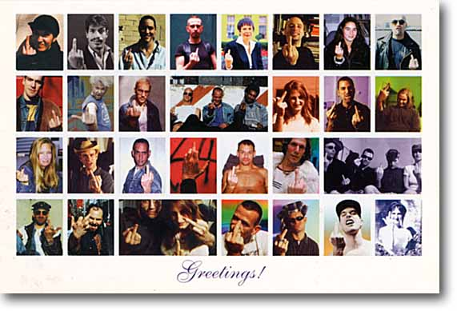

h0 h0 h0. yur 0wned by a juggalo. Mr. Admin Dewd, Your little gangbangin cult website suX0rZz PeN0rZz. I mean, Heaven's Gate was more interesting than your pathetic cult. Mad RespeCt to David KoreSh. Try fuckin over 50 guys wives and then you can call yurself a cult Leadah.
m4d r3ps3ct to xhostile, rewted, PHC, cyberfuckers, #sesame, ph33r th3 b33r, N30, SugarKing, Artech, Sabu, Team Echo, hack.be, team infinity, Devil-C, p4riah, PS911, ALOC, Forpaxe, McIntyre, pr1sm, 139_r00ted, ne0h, subartic, HiP, Legion 2000, Xessor, mistuh clean, lyp0x, Da^Bomb, mozy, Deicidal, HIT2000 , spinkus, bl0w team, an0nym0us, un1x b0wl1ng t34m, ULG, cult_hero, LevelSeven, v00d00, Hi-Tech Hate, gH, analognet, attrition.org, hackernews.com, packetstorm.securify.com, projectgamma.com, net-security.org, zataz.com and dutchthreat.org.